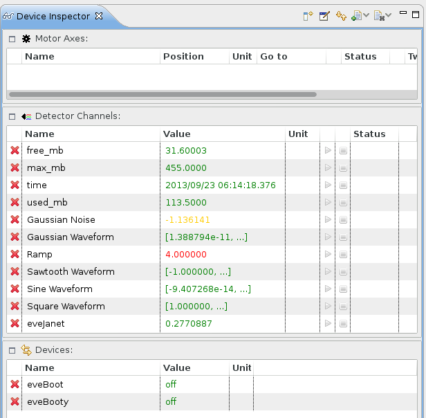
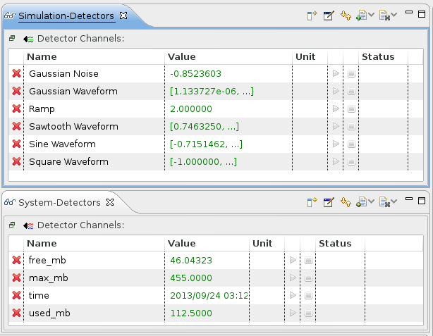
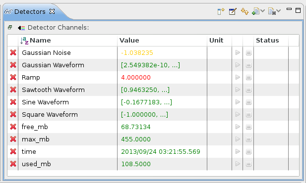

The Device Inspector view is the center of the EveDevice perspective. Devices added to it can be monitored and manipulated. After adding a device, depending on its type, certain connections to process variables are established to monitor it (e.g. a read back value of a detector channel or a goto position of a motor axis). If the process variable is writable it can also be modified (e.g. moving a motor axis or switching a discrete device from on to off or vice versa).
The Device Inspector view is highly customizable. The following figure shows an example of a Device Inspector view in its default state (filled with devices):

The toolbar offers commands to add and remove all devices of a certain type1. It is also possible to open additional Device Inspector views (and rename them). Together with the option to maximize a device table several scenarios are imaginable. One would be to separate the devices by type:
Another example would be to group them by class:

If your table grows to large to search for an entry you can sort it by name by clicking on the respective column:

The first click will sort the rows by name ascending. Another click sorts them descending and a third click reestablishes to „unsorted” state. More precisely you can toggle through the states unsorted → ascending → descending, which are represented by an icon in the column header (except for unsorted).
Note that when closing the application it remembers the position and contents of the Device Inspector views as long as you stay in the same workspace. When starting the application all connections are reestablished.
1 Adding all devices should be used with caution.